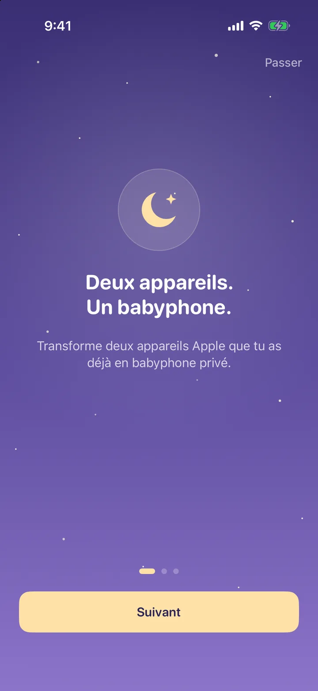
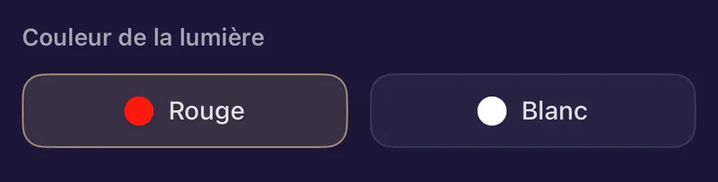
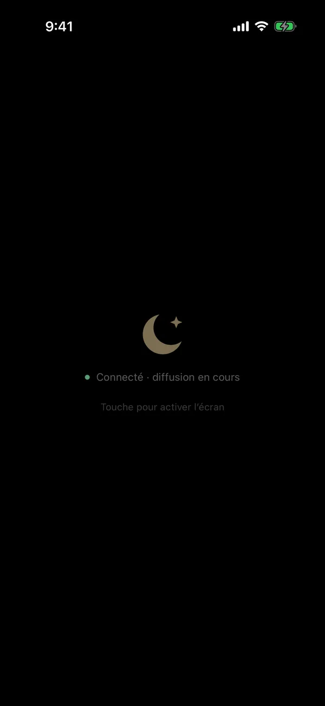
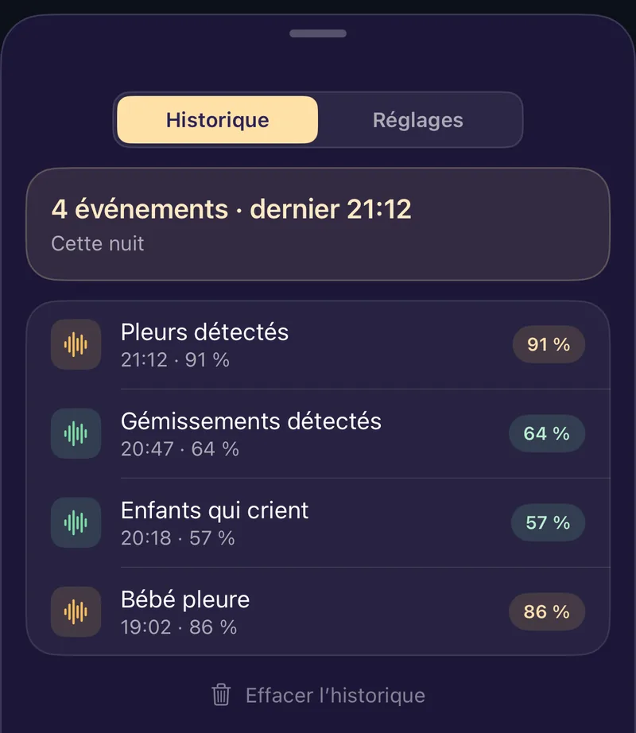
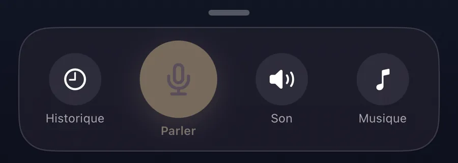
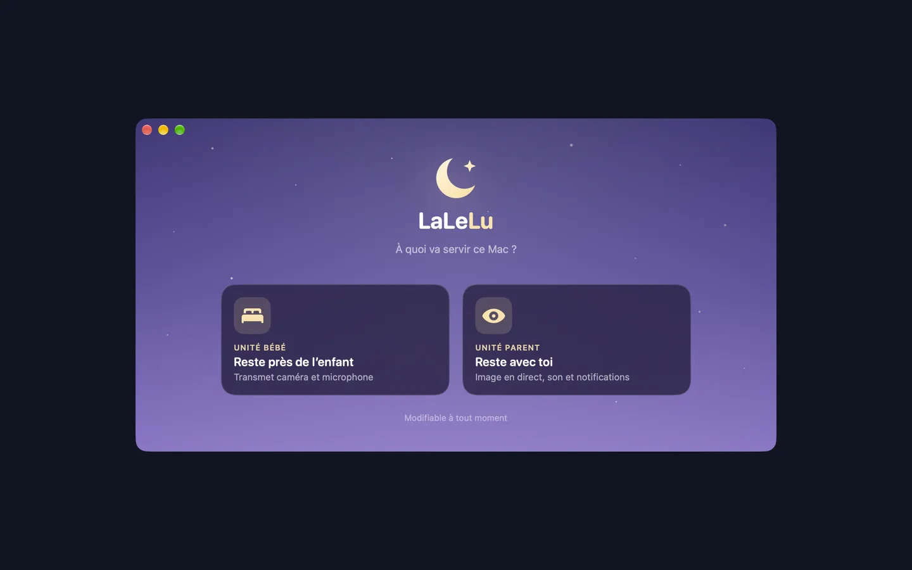
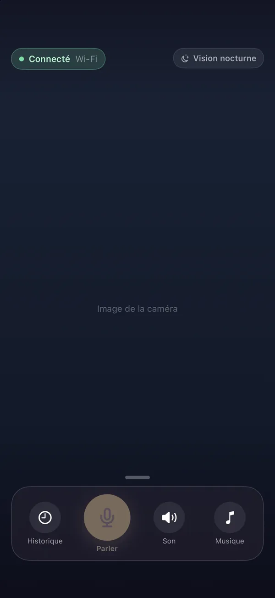

Babyphone gratuit. Vu de vous seul.
LaLeLu transforme votre iPhone, iPad et Mac en babyphone vidéo privé. Gratuit, sans abonnement, sans compte. Chiffré de bout en bout.
Pour iPhone, iPad et Mac. Deux appareils Apple nécessaires.

- Gratuit – 0 €
- Sans abonnement
- Sans compte
- Sans publicité
- Sans traçage
Babyphone avec caméra.
Toutes les fonctions gratuites.
Un appareil reste dans la chambre comme unité bébé, l’autre devient l’unité parents. Mélangez iPhone, iPad et Mac comme vous voulez.
- Vidéo et son en directEn Wi-Fi comme en déplacement, en données mobiles.
- Vision nocturneL’écran de l’unité bébé devient une lampe.
- Alerte pleurs sur l’appareilEn notification push, même iPhone verrouillé.
- InterphoneAppuyez pour parler, sans vous lever.
- Sons pour dormir avec minuterieBruits blancs, pluie et océan.
- Historique d’activitéReste local sur votre appareil.
Lumière éteinte.
Vision nocturne activée.
L’unité bébé reste dans la chambre plongée dans le noir. En mode nuit, son écran est presque noir pendant que le flux continue.
Avec la vision nocturne, son écran devient une lampe douce, rouge ou blanche. La lumière rouge dérange en général moins le sommeil.
Vous pouvez aussi activer et désactiver la vision nocturne depuis votre iPhone, sans entrer dans la chambre.


Votre bébé pleure.
Votre iPhone le sait.
La détection des pleurs se fait entièrement sur l’unité bébé, avec Apple SoundAnalysis. Dès qu’elle entend des pleurs ou de la toux, vous recevez une notification push, même écran verrouillé. Aucun son n’est envoyé dans le cloud pour cela.

Un mot doux.
Sans vous lever.
Maintenez « Parler » et votre voix résonne dans la chambre. Relâchez, et le silence revient.

Essayez : maintenez « Parler » appuyé.
Sons activés.
Minuterie lancée.
Bruit blanc, rose et brun, plus pluie et océan. Vous lancez les sons depuis votre iPhone.
La minuterie tourne sur l’unité bébé elle-même et baisse le son en douceur, même si votre iPhone perd la connexion entre-temps.
Choisissez 15, 30, 45 ou 60 minutes, ou sans fin.
Votre vieux Mac
a un nouveau métier.
Posez-le dans la chambre : avec sa caméra intégrée ou une caméra connectée, il devient l’unité bébé. Votre iPhone est l’unité parents.


1 à 2 secondesC’est le temps de connexion habituel à la maison. En déplacement, en données mobiles, souvent quelques secondes.
Combinez librementiPhone, iPad ou Mac dans la chambre, iPhone ou iPad avec vous. Un vieil iPhone suffit comme unité bébé.
Pour les deux parentsPlusieurs unités parents peuvent être connectées en même temps, même avec des identifiants Apple différents.
Babyphone confidentiel :
personne d’autre ne regarde.
- Chiffré de bout en bout.
- L’image et le son circulent directement entre vos appareils (WebRTC, DTLS-SRTP). Seuls les appareils que vous avez jumelés vous-même voient l’image.
- Jamais enregistré.
- L’image et le son ne sont stockés ni sur un serveur ni durablement dans l’application.
- Détection sur l’appareil.
- L’analyse des sons se fait en local avec Apple SoundAnalysis. Aucun son ne nous est envoyé.
- Sans compte, sans pub, sans traçage.
- Le jumelage ne demande que l’accès iCloud que vous avez déjà.
En toute transparence : LaLeLu s’appuie sur Apple (iCloud, notifications push) et Cloudflare pour établir la connexion et transmettre l’alerte. Ce qui est enregistré, et pour combien de temps, est détaillé dans la politique de confidentialité (en anglais).
Babyphone sans abonnement et sans compte
De nombreuses applications de babyphone demandent un abonnement, un achat par appareil ou un compte dédié. Pas LaLeLu.
| Critère | LaLeLu | Applications de babyphone courantes |
|---|---|---|
| Prix | Gratuit, pour tous les appareils | souvent un abonnement ou un achat par plateforme |
| Compte / inscription | Aucun, seulement votre accès iCloud existant pour le jumelage | souvent un compte dédié est exigé |
| Publicité et traçage | Sans publicité, sans SDK de traçage | parfois de la publicité ou des statistiques |
| Vidéo et son | Chiffrés de bout en bout, jamais enregistrés | parfois stockés ou traités sur des serveurs cloud |
| Détection des pleurs | Sur l’appareil, aucun son envoyé dans le cloud | parfois un simple seuil de volume ou une analyse cloud |
| Appareils | iPhone, iPad et Mac, à combiner librement | souvent une seule plateforme |
Le comparatif décrit des différences générales du marché, pas une application en particulier.
Prêt en quelques minutes
- Installer.Installez LaLeLu sur les deux appareils depuis l’App Store.
- Choisir.Choisissez « Unité bébé » sur l’appareil de la chambre et « Unité parents » sur l’autre.
- Jumeler.Jumelez-les avec un lien ou un QR code. C’est tout.
Babyphone : questions fréquentes
Ce babyphone est-il vraiment gratuit, sans abonnement ?
Oui. LaLeLu est un babyphone gratuit, sans abonnement, sans publicité et sans fonctions payantes. Il n’y a pas de période d’essai qui expire.
Ai-je besoin d’un compte pour utiliser LaLeLu ?
Non. LaLeLu n’a pas de compte propre ni d’inscription. Pour jumeler vos deux appareils une fois, l’application utilise l’accès iCloud que vous avez déjà sur votre iPhone, iPad ou Mac.
L’image ou le son sont-ils enregistrés ou stockés ?
Non. L’image et le son sont transmis en direct, chiffrés de bout en bout (WebRTC, DTLS-SRTP), directement entre vos appareils et ne sont enregistrés ni sur un serveur ni dans l’application. Si une connexion directe n’est pas possible, le flux, toujours chiffré, passe par un relais Cloudflare qui ne peut pas le déchiffrer.
De quels appareils ai-je besoin pour un babyphone avec caméra ?
De deux appareils Apple : l’un reste dans la chambre comme unité bébé (iPhone, iPad ou Mac avec caméra et micro), l’autre est l’unité parents (iPhone ou iPad). Un vieil iPhone suffit comme unité bébé. Android n’est pas pris en charge.
Puis-je utiliser mon Mac comme babyphone ?
Oui. L’app Mac fonctionne comme unité bébé avec la caméra intégrée ou une caméra connectée et le micro. Elle reste dans la chambre pendant que votre iPhone sert d’unité parents.
Cela fonctionne-t-il hors de chez moi, en données mobiles ?
Oui. La connexion se fait sur le même Wi-Fi, mais aussi en données mobiles ou sur d’autres réseaux. Les deux appareils doivent avoir accès à Internet. À la maison, la connexion prend en général une à deux secondes, en déplacement souvent quelques secondes.
Comment fonctionne la détection des pleurs ?
La détection des sons s’exécute entièrement sur l’unité bébé avec Apple SoundAnalysis. Aucun son n’est envoyé dans le cloud pour analyse et rien n’est collecté pour l’entraînement. Quand l’application entend des pleurs ou de la toux, vous recevez une notification.
Reçois-je l’alerte quand mon iPhone est verrouillé ?
Oui. L’alerte arrive sous forme de notification push, même écran verrouillé. Autorisez les notifications pour LaLeLu dans les réglages de votre iPhone.
Comment jumeler l’unité bébé et l’unité parents ?
Sur l’appareil du bébé, vous créez un lien de jumelage ou un QR code, que vous ouvrez ou scannez sur l’appareil des parents. Cela prend quelques minutes. Le lien est la clé du jumelage : ne le partagez qu’avec des personnes de confiance.
Peut-on connecter plusieurs unités parents en même temps ?
Oui. Plusieurs unités parents peuvent être connectées en même temps, pour que les deux parents restent informés, même avec des identifiants Apple différents.
Aide et assistance
Une question, un retour ou besoin d’aide ? Écrivez directement au développeur, une vraie personne vous répond : moritz.wolf@a1.net. Dans l’application, vous trouverez aussi « Signaler un problème / Feedback ».
Votre babyphone est déjà dans votre poche.
Téléchargez LaLeLu gratuitement et installez votre babyphone privé en quelques minutes.
Télécharger gratuitement sur l’App Store